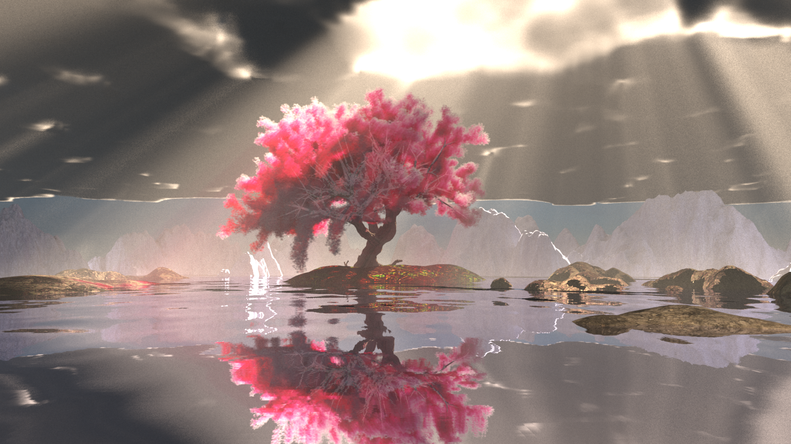
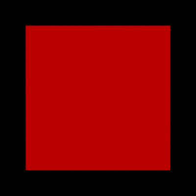
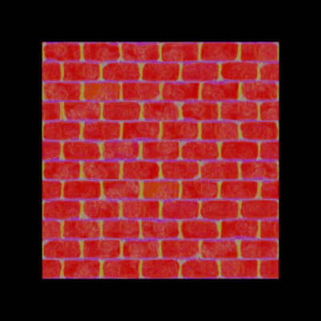
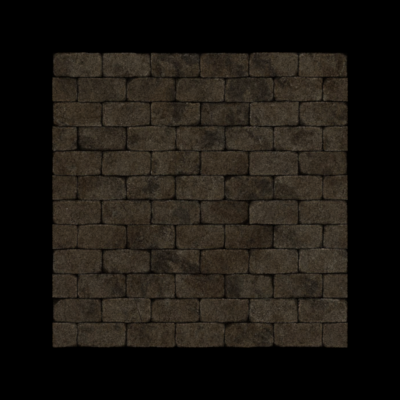
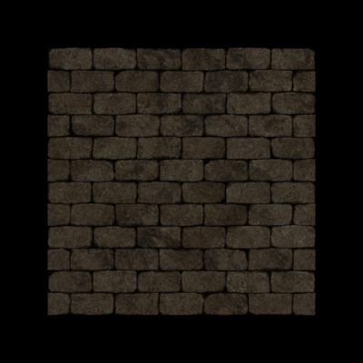
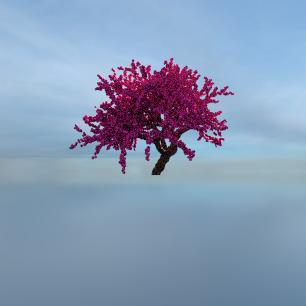
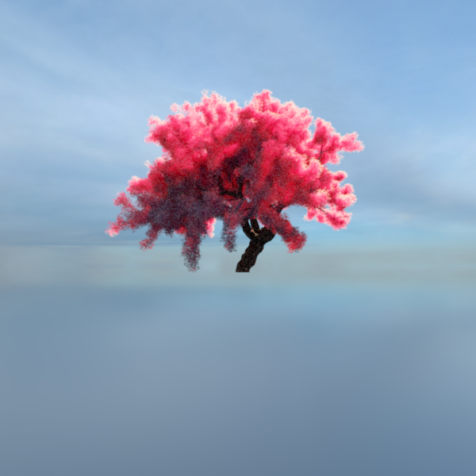

**Final Project Report**
Student name: Antoine Tran
Sciper number: 326177
Final render
============

About the report
================
The `report/` folder contains sub-folders for each feature, in which you can find the `.xml` files used for rendering the reference images you will see below. The procedurally generated tree is an exception, as it can't be rendered with just a `.xml` file, it also needs a "controller" class (explained in the relevant section).
Running the project requires two external libraries, OpenCV and OpenVDB. The CMakeLists file is configured for my personal setup. It is possible to run most of the code without the two libraries (especially OpenVDB, which is only useful for heterogeneous media), but might require removing them from the config file.
Textures
=========
Implementation
----
To implement textures, I decided to generalize the concept of albedo used by the diffuse and microfacet models. I introduced a `DiffuseMap` interface with two useful implementations.
Given an input $c \in [0, 1[^2$:
* `UniformDiffuseMap` always returns the same albedo, passed during construction,
* `TextureDiffuseMap` returns the pixel color corresponding to coordinate $c$ in image $I$, passed during construction.
Using the already defined `uv` parameter of the intersection structure, we can simply pass it in the `BSDFQueryRecord` object to the concerned BSDFs during execution.
Repeat parameter
----
`TextureDiffuseMap` is also equipped with a `repeat` parameter, which defines a range for spanning the whole image (default is `repeat=1`).


Normal mapping
=========
Implementation
----
The `Mesh` class is extended with an additional `DiffuseMap` attribute, which in practice is the `TextureDiffuseMap` implementation. When calculating the shading normal in `accel.cpp`, the geometry normal is distorted:
```cpp
Vector3f bump_normal = 2 * mesh->get_normal_bump(its.uv) - Vector3f(1.f); // remap in range [-1, 1]
bump_normal.z() /= mesh->bump_accentuate_factor(); // optional factor to increase / decrease the bump
Frame shFrame = Frame(frame.toWorld(bump_normal.normalized()));
```
Wall renders
----


*Render with the `normals` integrator (left with normal map, right without)*


*Same render, with a regular MIS integrator (left with normal map, right without)*
Procedural Geometry (and voxel data)
=========
Fractal perlin noise
----
The implementation of fractal perlin noise is very standard and can be broken down into several steps.
### Initializing gradients to random values $\in [-1, 1]^2$
```cpp
for(int z = 0; z < res_z; ++z) {
for(int x = 0; x < res_x; ++x) {
Vector2f p = Vector2f(2 * nextFloat() - 1, 2 * nextFloat() - 1);
gradients[x + z * res_x] = p.normalized();
}
}
```
### Evaluating the noise value for a given point $(x, z)$
```cpp
// find corners
int x0 = (int) x, x1 = x0 + 1;
int z0 = (int) z, z1 = z0 + 1;
// get gradients of each corner
Vector2f c0, c1, c2, c3 = (...);
Point2f p = Point2f(x, z);
// get offset of p from each corner;
const Vector2f off0, off1, off2, off3 = (...);
// compute dot product between offset and gradient for each corner
float dp0, dp1, dp2, dp3 = (...);
// use smooth fading function fade(t) = ((6*t - 15)*t + 10)*t*t*t
float t_h = fade(x - x0);
float t_v = fade(z - z0);
// lerp once for each dimension
float v_inter_left = lerp(t_v, dp0, dp1);
float v_inter_right = lerp(t_v, dp3, dp2);
// merge lerps
return lerp(t_h, v_inter_left, v_inter_right);
```
### Combining multiple layers with increasing resolution (fractal noise)
```cpp
// initial parameters for octave 0
float amplitude = 1.f;
float freq_x = base_freq_x;
float freq_z = base_freq_z;
float result = 0;
// "perlins" are a list of perlin noise generators with different seeds
for(auto gen : perlins) {
// query the value of one layer
float gen_height = amplitude * gen->get(x * (freq_x - 1), z * (freq_z - 1));
result += gen_height;
// update parameters
amplitude *= amp_decay;
freq_x *= freq_increase;
freq_z *= freq_increase;
}
return result;
```


Procedural tree generation
----
The main tree is generated by a combination of three techniques.
### Stochastic context-sensitive LSystems (main "skeleton")
The shape of a particular system may be specified with a grammar file. A basic interpreter (written in `lsystem.h`) translates this slightly higher level syntax to a correct LSystem grammar (where each character only does one thing)
```
#DEFS
Branch = B
Node = K
Depth = D
Cylinder = G
15> = >>>
15< = <<<
30> = >>>>>>
30< = <<<<<<
90> = >>>>>>>>>>>>>>>>>>
90< = <<<<<<<<<<<<<<<<<<
15+ = +++
15- = ---
30+ = ++++++
30- = ------
#RULES
Premise = r Node
Node =s Branch
Node =s Branch Depth 30- 15- Node; Branch Depth 30+ 15+ Node
Node =s Branch Depth [wl 30+ + Node][wl 30- - Node]
Branch = Cylinder
```
* Macros, such as `Branch = B` or `15> = >>>` can be defined to make the grammar easier to read
* Context-free uniformly distributed rules can be specified with the `;` character, that is: in any given scenario where character $c$ is encountered, the rule $c=r_1;r_2;...;r_n$ will be reduced to $r_i$, $i \sim \text{Uniform}[1, n]$
* More complex stochastic rules are specified with the $s$ character. They have multiple potential definitions, and the picking of the rule is done in a "controller" C++ file that has access to the current context of the character (depth, current length of the branch, etc)
The supported characters are:
* F,G,H,K -- Draw
* [, ] -- Push/Restore turtle state
* +,- -- Rotate in the XY plane (configurable, 5 degrees in practice)
* <,> -- Rotate in the XZ plane (configurable, 5 degrees in practice)
* w,W -- Shrink/Increase width (configurable)
* l,L -- Shrink/Increase length (configurable)
* r,d -- Add/Remove randomness feature (randomness handled by the controller)
* D -- Increase depth marker (useful for context)
* ; -- Add multiple uniformly distributed options
* s -- Declare rule as stochastic (configuration decides the weightage)
The main tree only uses the current depth to pick a branching rule (the grammar can be found in `assets/grammar/middletree.l6`) with the following probabilities:
```cpp
// from TreeIsland in lconfig.h
float sample = random.nextFloat();
if(depth <= 4) return pick(sample, 0.0, 0.0, 0.8, 0.0, 0.2);
if(depth <= 6) return pick(sample, 0.0, 0.4, 0.3, 0.2, 0.0);
if(depth <= 8) return pick(sample, 0.0, 0.1, 0.4, 0.4, 0.1);
if(depth <= 12) return pick(sample, 0.8, 0.0, 0.0, 0.2, 0.0);
else return 0;
```
where `rule0` is "stop the branch", `rule1` is "continue the branch in a different direction", `rule2` is "split the branch into two subbranches", `rule3` is similar to `rule2` but also creates dead branches, and `rule4` splits the branch into three subbranches.
### Branch drawing with perlin noise / straight cylinders
For branches at a high enough depth (say, above 7), drawing a simple cylinder is a method that works well without any visual drawbacks. However, for thicker ones such as the main trunk, it is interesting to induce bumps according to some variation of perlin noise. Derived from the observation that trunks often have "vertical stripes", the "striped" perlin noise is a simple noise where for a coordinate $(x, y) \in [0, 1]^2$,
$$
\text{striped}(x, y)=
\begin{cases}
\text{perlin}(x, y), & \text{ if } y = 0\\
0.3 \cdot \text{perlin}(x, y) + 0.7 \cdot \text{striped}(x, y-\Delta y) & \text{ otherwise}
\end{cases}
$$
where $\Delta y$ depends on the resolution of our perlin data.
We then apply that noise to a fairly high resolution cylinder. Basically, when trying to connect $p_0$ to $p_1$, we append $N$ circles to the vertex list of our mesh, where circle $c_0$ is centered in $p_0$, oriented according to the direction $d_i$ of the previous branch, and $c_{N-1}$ is centered in $p_1$, oriented according to the direction $d_o = (p_1 - p_0)$. Intermediate circles $c_j$ are positioned along the path and with orientation
$$\textbf{n} = \left( 1 - \frac{i}{N-1}\right) \cdot \textbf{d}_i + \frac{i}{N-1} \cdot \textbf{d}_o$$
where $\textbf{n}$ is the normal of the circle.
Then, if a circle is made of $M$ points, for a point index $j$ on the $k$ th circle, we pull it away from the center according to the noise function:
$$
\begin{align*}
D &= \text{striped}\left(\frac{j}{M-1}, h_0 + \frac{k}{N-1} \cdot (h_1 - h_0)\right) \\
p_{j,k}^{\text{distorted}} &= \text{center}(c_k) + \left(1 + \lambda \cdot D\right) \cdot \left(p_{j,k} - \text{center}(c_k)\right) \\
\end{align*}
$$
where $\lambda$ controls the strength of the bump, and $h_0$ and $h_1$ are usually set to depth values, so that if we're drawing two cylinders, each gets "half of the perlin map", connecting them smoothly.


The drawing method is handled by the controller. For instance, to induce striped noise and all branches with $\text{Depth} \leq 3$, the controller would do:
```cpp
// Note: code slightly simplified for readability (from lconfig.h)
float max_depth = 3;
if(state.depth >= max_depth) {
// Draws regular cylinder according to the state
drawCylinder(state);
} else {
int BASE_RES_X = 6;
int BASE_RES_Z = 6;
uint64_t SEED_STATE = 3227124;
uint64_t SEED_SEQ = 10951913;
FBM fbm(BASE_RES_X, BASE_RES_Z, 5, 0.35, 2.0, SEED_STATE, SEED_SEQ);
fbm.init_generators();
// Draw cylinder with 48x48 resolution, bumped by striped noise
// Notice the h0 and h1 parameters set for smoothness between branches
drawCylinder(state, fbm, state.depth / max_depth, state.depth / max_depth + 1 / max_depth,
Vector2i(48, 48));
}
```
### Flower cloud generation
To render the flowers of the tree, voxel data instead of mesh data is generated. The main motivation for this is that it avoids both needing to implement subsurface scattering and keeping in memory a large number of transform data not optimally arranged (as opposed to voxel data, which, with OpenVDB, can be accessed very efficiently). The generation happens during runtime and requires pre-building a set of positions, a task handled by the controller. Whenever it draws thin enough branches to have flowers on them, the controller generates a number of random positions surrounding the branch, which are added to a global list. Once the controller is done drawing the tree, a grid scan of the space surrounding the tree is done. Each point of the list is initially treated as a sphere of radius $R$, but is then fragmented into $k$ small spheres of radius $r < R$ randomly placed inside that sphere of radius $R$. That fragmentation phase allows us to have many small points, yet keep a certain structure with groups of flowers. For each cell of the grid, the number of spheres touching it is stored as a density coefficient. That collection of density coefficients is exported as a voxel file, which is then reopened by the heterogeneous media system.
```cpp
// Note: this code is a slightly simplified version for better readability (procedural.cpp)
for(const auto& p : fragmented_positions) {
std::set coords;
// This initial loop checks for cells (i.e Coord) touched by the sphere
// centered in p
for(int r = (...)) {
for(int phi = (...)) {
for(int theta = (...)) {
Vector3f sphere_point = p + r * sphericalDirection(theta, phi);
Coord xyz = trafo->worldToIndexCellCentered(sphere_point);
coords.insert(xyz);
}
}
}
for(const auto& coord : coords) {
accessor.setValue(coord, accessor.getValue(coord) + 1);
}
}
```
The generation of the main cloud follows a fairly similar approach: a grid determines the number of clouds to generate, and for each cloud a set of large spheres is generated, giving it a general shape. Then, many smaller spheres are generated inside the cell. Spheres that lie outside the boundary of the cloud (that is, that intersect with none of the large spheres) are discarded. The same grid scan is done and density coefficients are converted into voxel data.


*A visualization of the sphere counting algorithm, where spheres are actually rendered as mesh. The slider reveals the flower cloud generated after turning the spheres into a density map*
Image Based Lighting
=========
Implementation
----
A new implicit spherical shape was introduced for collision detection. By setting its radius to a large value (say, $> 5000$), we can treat it as a regular emitter (instead of an infinite area light). The major difference is that points on the spheres are not selected uniformly, but proportionally to their intensity (fast sampling of the discrete PDF is done with the mip map implementation). The implicit collision detection is done with the formula taken from the [PBRT book](https://pbr-book.org/4ed/Shapes/Spheres#IntersectionTests) (in `shape/sphere.cpp`).
The `environment` emitter stores two square maps, each representing half of a rectangular HDRI, and picks one of the two when sampling a point (with a 2-element PDF containing their normalized total weights). Once the sample is correctly mapped to $s \in [0, 1[^2$, the projection to a sphere point is the regular spherical coordinate projection (which is not uniform and that's fine, as the HDRI already accounts for the distortion).
Two elements of validation are included in this report, the first showing that the radius chosen doesn't impact the illumination of the scene, the second showing a render with only one non-black pixel compared to a point light illumination.
Invariability to radius change
----


Equivalence with point light
----


Heterogeneous Volumetric Participating Media
========
This feature was implemented incrementally, that is, seven different integrators were written, the first one being very basic and the last one being able to handle multiple heterogeneous mediums. This incremental aspect was inspired by [this assignment](https://cseweb.ucsd.edu/~tzli/cse272/wi2023/homework2.pdf) from the University of California San Diego. Note that the idea of decomposing the task into 7 steps is the only thing that was taken from the homework, all pieces of code were written fully autonomously.
The final integrator (`volum7.cpp`) has the following features:
* Mesh-like shaped media
* Absorption and scattering
* Next Event Estimation + Indirect scattering without MIS
* Emitter and non emitter surfaces
* VDB media with null-collision techniques (delta + ratio tracking)
Supporting multiple volumes
----
The volumetric integrator can only handle one single media. Therefore, to have multiple in the scene, we need to merge them into one (`multimedium.cpp`). By keeping in memory the bounding boxes of each media and their respective majorants, for a given ray the majorant to use is only the majorant of the medias it touches. This is a crucial optimization, especially for the final scene where there is both very thin media (the fog) and very dense media (the flowers).
```cpp
float majorant(const Ray3f& ray) const override {
float maj = 0;
for (auto c : children) {
// Only consider the children that intersect with the ray
if(c->bounds().rayIntersect(ray)) {
maj = max(maj, c->majorant(ray));
}
}
return maj;
}
```
*Sample code from `multimedium.cpp` used to find the majorant for a particular ray*


Phase functions
----
Two phase functions were implemented, uniform phase (fully isotropic) and henyeygreenstein. The formula for HG was taken from the PBRT book.
The warp test was extended to support both.


Implementation details
----
The Ray class is extended with a "starting" medium parameter. Whenever the BVH calculates an intersection, it also stores a `min_t` and `max_t` value, consisting of the media range. In other words, for any $t$ such that $\text{min_t} \leq t \leq \text{max_t}$
```cpp
Point3f p = ray.o + t * ray.d;
```
lies within the media.
The integrator functions, in essence, similarly to a regular non-volumetric path tracer. The key difference happens when the BVH calculates intersection data, and finds a media. At that point, a scattering distance through the media is sampled. We are able to importance sample the transmittance, perfectly cancelling it out (except for a $\frac{1}{\sigma_t}$ normalization term). We then compare that distance to maximum distance allowed, that is, the minimum between $\text{max_t} - \text{min_t}$ and the distance to the nearest physical object hit by the ray. If the distance goes beyond the maximum distance, we consider a physical (with BSDF) collision, if an object exists. Otherwise, we consider a volumetric (with Phase function) collision.
The probability of sampling beyond the ray is a discrete PDF which perfectly cancels out the transmittance.
Once the type of intersection is determined, next event estimation samples a point on an emitter, calculates the transmittance if a media lies between the two points and adds the direct contribution. We then sample a next direction by importance sampling either the phase function or the BSDF, depending on the type of interaction. As for non-volumetric path tracing, we avoid double counting by only adding direct contributions of emitters if the last bound was specular or if it's the first one.